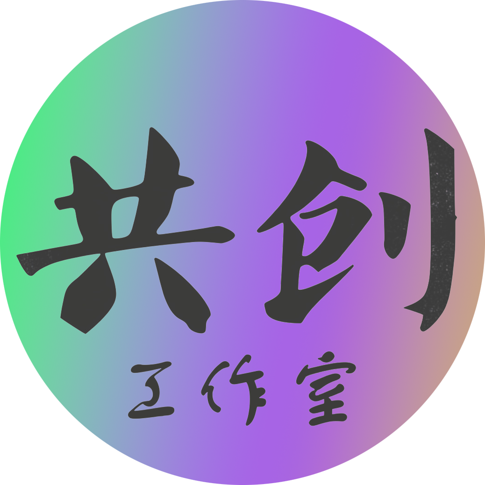

《共创工作室》
专注内容制作、社区运营与游戏运营的三人创意团队，我们服务于个人创作者与公益组织，以资源整合与创意策划为核心，帮助伙伴完善内容与运营体系。

🎨 自主创作 ✨ 个人发布不限制创作的自由度让创作者自由发挥
事实时更新活动内容,保证活动流畅无信息差
只需上传服务器ip即可快速上线
Ai代理托管,无需人工自动化管理
对minecraft专门优化算法,支持生电,大型整合包等多场景
----------------------
本服务采用代理服务器架构进行网络中转，用户端连接至代理服务器后，由代理服务器将操作数据转发至服务器，并将服务器响应回传至用户端，该机制可有效优化网络传输路径，降低访问延迟，同时隐藏游戏服务器真实地址，增强服务稳定性与安全性。